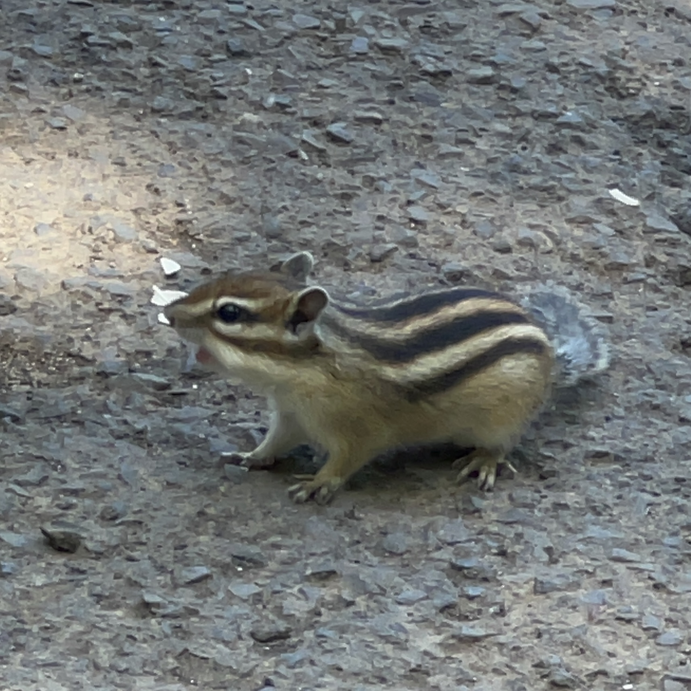

その他

場所：天狗山シマリス公園（北海道小樽市）
撮影：2025年7月
撮影：2025年7月

場所：工学部8号館と9号館の間の渡り廊下の下（山形県米沢市城南）
撮影：2023年3月
撮影：2023年3月

場所：堀立川（山形県米沢市林泉寺）
撮影：2022年8月
撮影：2022年8月

場所：堀立川（山形県米沢市林泉寺）
撮影：2022年4月
撮影：2022年4月

場所：三ヶ日みかん直売所（静岡県浜松市三ヶ日町大崎）
撮影：2020年3月
撮影：2020年3月

場所：関沢IC前（山形県山形市大字関沢）
撮影：2019年12月
撮影：2019年12月

場所：宮城県仙台市青葉区荒巻字青葉地内
撮影：2019年5月
撮影：2019年5月

場所：釜房ダム（宮城県柴田郡川崎町）
撮影：2018年9月
撮影：2018年9月

場所：林道笈坂〜石保線（宮城県仙台市泉区）
撮影：2017年12月
撮影：2017年12月

場所：宮城県仙台市青葉区荒巻字青葉地内
撮影：2017年11月
撮影：2017年11月

場所：山形県道318号新庄長沢尾花沢線
撮影：2017年8月
撮影：2017年8月

場所：山形県道234号綱木小野川館山線
撮影：2016年1月
撮影：2016年1月
今後の演奏会出演予定
- 未定
活動歴
- 弦楽合奏（コントラバス）
- 2019.4 – 現在：アンサンブルJOHY
- オーケストラ（コントラバス）
- 2011.12 – 現在：山形フィルハーモニー交響楽団
- 2011.4 – 2013.11：山形大学工学部・米沢女子短期大学アカデミーストリングス合奏団
- 2011.4 – 2013.11：山形大学フィルハーモニーオーケストラ
- 吹奏楽（いろいろ）
- 2020.6 – 2021.10：豊橋技術科学大学吹奏楽団（トロンボーン）
- 2008.4 – 2011.3：山形県立山形中央高等学校吹奏楽部（コントラバス）
- 2005.4 – 2008.3：中学校吹奏楽部（コントラバス → チューバ → コントラバス）